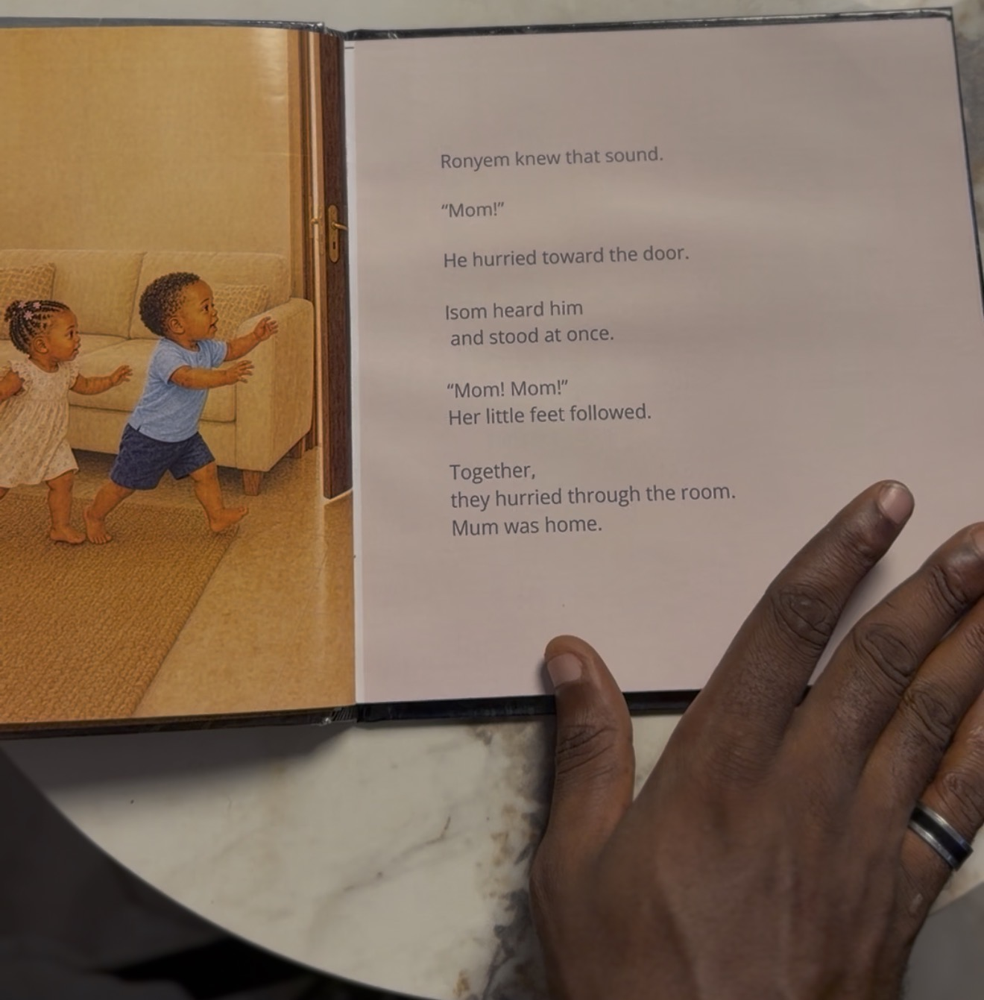
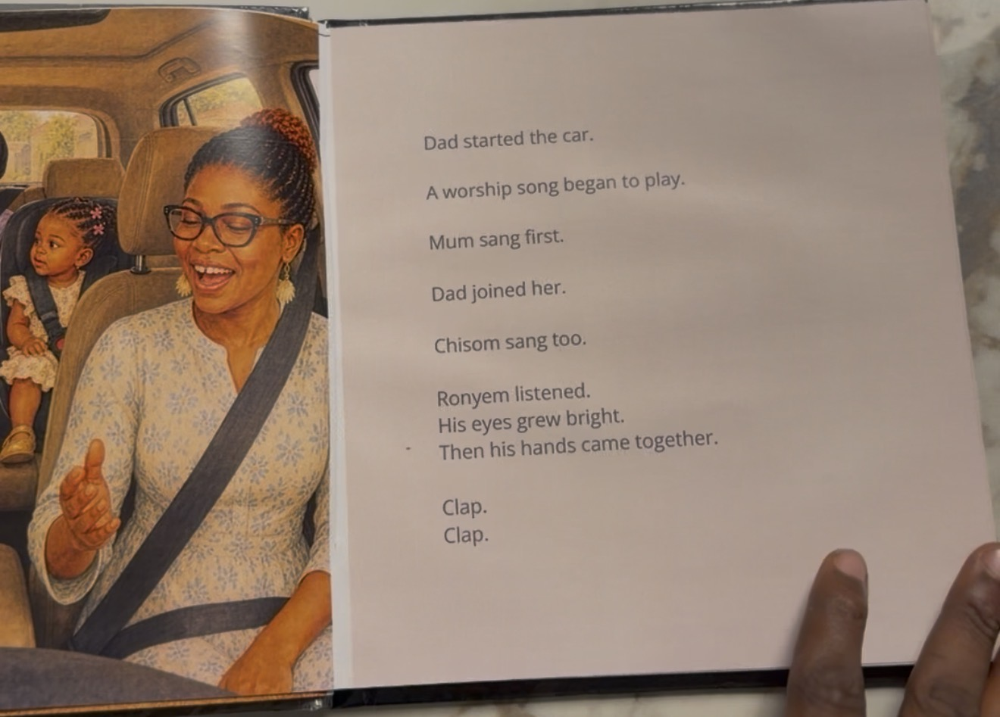

1. Apply
A short introduction to your family. No payment and no children’s photos at this stage.
A personalised illustrated hardcover shaped around your child's personality, favourite things, little sayings and family memories—not simply their name added to an existing story.
Legacy Edition · A$225
Includes standard shipping within Australia, where supported.
A$112.50 deposit · A$112.50 after creative approval, before printing.
No payment today. We reply in under 24 hours. No children’s photos needed at this stage.

Their mum told us how Ronyem would run to the door calling for her as soon as the lock clicked. That little homecoming became a scene in Ronyem and Isom’s own illustrated story.

Their mum also shared a memory of singing along in the car on the way to church. In the finished story, the family joins the song and Ronyem claps along. Your book reflects your own family’s routines, relationships and beliefs.

“A beautiful personalised book that makes children feel special and encourages a love of reading.”Maddison, Australia · Real family review

We are beginning with twenty families, creating each book in carefully managed batches.
Your scope, production timing and delivery support are confirmed before payment.
You help shape the story and approve the finished book before printing.
A commissioned hardcover created around your child or children, the people they love and the memories your family wants to preserve.
Characters are storybook interpretations inspired by your photographs—not photographic portraits.
A$112.50 deposit · A$112.50 after creative approval, before printing. No payment today.
Includes standard shipping within Australia, where supported. Delivery is confirmed before private onboarding.
Completed Legacy examples span approximately 100–115 pages. Your final page count is confirmed before payment.
Expected production is 2–4 weeks from your confirmed batch start. Delivery timing is confirmed separately.
Your application helps us confirm your story scope, our availability and delivery—not assess your family. We explain the next steps before you commit.
A short introduction to your family. No payment and no children’s photos at this stage.
Once scope and timing are confirmed, a 50% deposit starts your agreed creation journey. We shape your story through the included review stages.
You approve the story and illustrations, then pay the remaining 50% before printing. Your book is printed and delivered.
Tell us briefly about your family and why you want to preserve this season.
We confirm fit, production capacity and delivery support for your region.
Accepted families receive the full scope, timing and private payment instructions.
Your questionnaire guides the story plan, emotional message and family details.
Character direction, story and illustrations move through defined approval stages.
After final approval and balance, your keepsake is prepared for your family.
We reply by email in under 24 hours to discuss your story, confirm availability and explain the next steps. No payment is taken with your application.
After acceptance and your deposit, you complete the story questionnaire and provide reference photographs through private onboarding. You then review the story and character direction, and send your corrections together at each included review stage. You approve the final creative work before printing.
No payment is taken with your application. After acceptance and written confirmation of scope and timing, you pay 50%. The remaining 50% is due after final creative approval and before printing.
Production is expected to take 2–4 weeks from your confirmed batch start. We confirm that start date and the delivery estimate in writing before payment; shipping time is separate.
You approve the overall storybook identity and visual direction before scene production. Once approved, that direction becomes locked. Complete redesigns are outside the included corrections.
No. The edition includes one consolidated story-review round and two consolidated illustration-correction rounds. Additional work can be quoted separately.
Yes. The story can centre more than one child and preserve each child's individual personality within their shared family world.
The application is intentionally short. Detailed family information is collected only after acceptance.